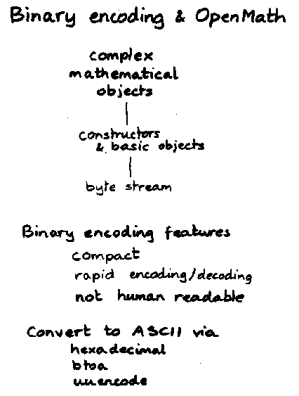
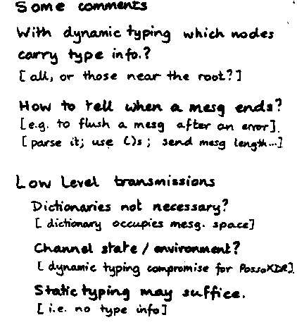
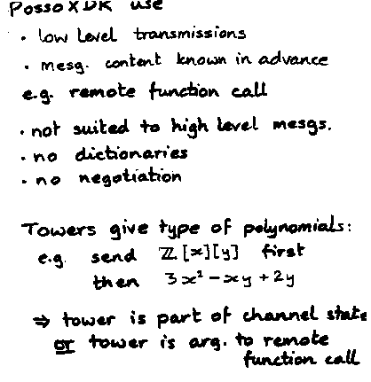
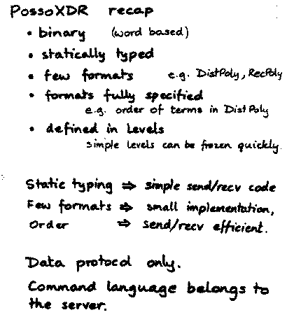

J. Abbott: Binary encodings and OpenMath
Slides presented at OpenMath Workshop 3 by John Abbott.

(full size, 12k)
(original, 15k)

(full size, 19k)
(original, 21k)

(full size, 16k)
(original, 18k)

(full size, 18k)
(original, 20k)
This page is part of the OpenMath Web archive,
and is no longer kept up to date.